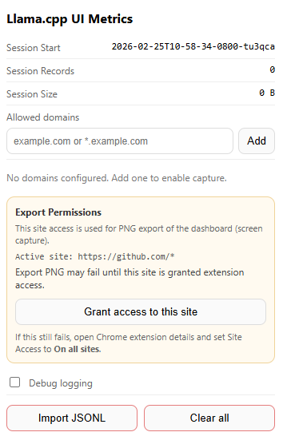

llamacpp-ui-metrics-extension
llama.cpp UI Metrics (Chrome Extension)
Manifest V3 extension that captures llama.cpp-style streaming metrics from browser UIs that call POST /v1/chat/completions over SSE. Docs: https://mwiater.github.io/llamacpp-ui-metrics-extension/
Table of contents
- What it does
- Capture scope
- Completion boundary logic
- Session model
- Dashboard (in-page)
- Popup (extension action)
- Allowed domains
- Install (Chrome, unpacked)
- Development
- File layout
- Privacy
- Known limitations
What it does
- Hooks
window.fetch()in page context (no DOM scraping for model output) - Watches streamed
text/event-streamresponses and parsesdata:chunks - Captures one record per completed response into IndexedDB
- Exports current session records as JSONL
- Exports the in-page dashboard as a stitched PNG (full scroll capture)
- Supports
Allowed domainsmanagement in popup - Shows
Export Permissionsstatus in popup and can request active-site access for PNG export - Supports
Debug loggingtoggle in popup - Renders an in-page metrics dashboard (
Metricstab injected on allowlisted hosts)
Capture scope
Per-record fields are best effort and include:
- Request metadata:
- model, generation params, body bytes, message counts/sizes
- image signals (
req.has_images,req.images_bytes, per-part image info) - document/file attach signals (PDF/text detection + recent file names)
- Response metadata:
- completion id/model/fingerprint
- timings and token counters from streamed chunks
- finish reason
- Derived split metrics:
- reasoning vs content split when
delta.reasoning_contentappears before completion
- reasoning vs content split when
Notes:
- Extension tracks
choices[0]only. - If
delta.reasoning_contentis absent, reasoning split fields are null/zero as expected.
Completion boundary logic
A record is emitted when the stream reaches completion with usable timing data:
- Primary path: chunk with
choices[0].finish_reasonandtimings - Fallback path:
[DONE]marker + last timed chunk
If no timed completion chunk is found, no record is emitted.
Session model
- Single active session at a time
Export JSONLexports active session onlyExport PNGcaptures the current dashboard view (including current filters/theme)Clear allremoves all stored records and resets active session
Export filename format:
llamacpp-metrics_<sessionId>.jsonl
Dashboard (in-page)
On allowlisted hosts, a Metrics button is injected into the page.
- Open overlay for a full-width infographic dashboard, rankings, comparisons, scatter plots, and per-model analysis
- Input-mode and model filters apply across all dashboard sections
- Refresh, theme toggle, JSONL export, and PNG export are built in
- Overlay can be minimized and closed with
Esc
Dashboard screenshots
Light theme example:

Dashboard header buttons
The dashboard header includes the following controls:
Dark(theme toggle): switches between light and dark dashboard themes (when dark mode is active, the button label changes toLight)Export JSONL: exports the current active session records as JSONLExport PNG: captures the current dashboard view as a stitched PNG imageRefresh: reloads dashboard stats from the extension's stored session dataMinimize: collapses/hides the overlay without closing the injected dashboard entry point
Popup (extension action)
The popup includes:
- Session stats (start time, record count, storage size)
- Allowed domain management (
example.com,*.example.com, etc.) Export Permissionspanel for PNG export:- Checks active-site access status
Grant access to this sitebutton (when requestable)- Fallback guidance to set Chrome extension Site Access to
On all sites
- Debug logging toggle
- Import JSONL / Clear all actions
Popup / settings screenshot

Popup fields and settings (what each item does)
Session start: the active session ID (timestamp-based) used for new captures and exportsRecords: count of captured completion records in the active sessionStorage size: estimated local storage size of the active session dataAllowed domains: host allowlist controlling where capture/dashboard injection is enabled- Domain input field: enter a host pattern such as
example.com,localhost:8080, or*.example.com Addbutton: adds the typed domain pattern to the allowlist- Domain list: shows all configured allowed-domain patterns
Remove(per row): removes that domain pattern from the allowlistExport Permissionspanel: status area for current-tab site access required by dashboard PNG exportActive siteline: shows the current tab origin permission pattern (for examplehttps://example.com/*) when available- Permission status/details text: explains whether access is available, missing, or not requestable (for example on
chrome://pages) Grant access to this site: requests optional host permission for the active tab's originDebug loggingtoggle: enables verbose logs/probes across background/content/injected layersImport JSONL: imports records from a JSONL file and overwrites current stored data (after confirmation)Clear all: deletes all stored records and resets the active session (after confirmation)- Status message area: shows action feedback and errors (domain added, import status, permission result, etc.)
Allowed domains
Configure in popup (Allowed domains):
example.comlocalhost:8080*.example.com
Capture starts only when current page host matches one of these patterns. Refresh open tabs after allowlist changes.
Install (Chrome, unpacked)
Load the extension in Chrome (Load unpacked + Developer mode)
- Open Chrome and go to
chrome://extensions - Turn on
Developer mode(top-right) - Click
Load unpacked - Select this project folder (the folder containing
manifest.json) - Confirm the extension appears in the Chrome extensions list
First-time setup / usage
- Open your target llama.cpp WebUI (or another compatible UI that streams from
POST /v1/chat/completions) - Click the extension icon to open the popup
- Add the site host to
Allowed domains(for examplelocalhost:8080) - Refresh the target tab so the page hook and dashboard UI can be injected
- Run one or more completions in the UI
- Open the injected
Metricsbutton/tab on the page to view the dashboard - Use popup or dashboard export buttons (
Export JSONL,Export PNG) as needed
If PNG export fails with a capture permission error:
- Open the extension popup
- Check
Export Permissions - Grant access to the current site (if prompted)
- Reload the page and reopen the dashboard
Alternative: set the extension's Chrome Site Access to On all sites in Chrome's extension details.
Development
Run tests
A lightweight Node test suite covers high-value pure helper functions across the extension scripts (no Chrome runtime or Playwright setup required).
- Run directly:
node --test "tests/*.test.cjs" - Run via package script:
npm test
Current suite includes helper coverage for background.js (chain heuristics, dashboard aggregation, scenario comparisons), plus pure helper logic in content.js, injected.js, and popup.js.
Generate API docs with TypeDoc
This repo now includes typedoc, typescript, and @types/chrome as dev dependencies, plus a tsconfig.json configured for JavaScript + JSDoc (allowJs) and Chrome extension typings.
Install dependencies first:
npm install --save-dev typedoc typescript @types/chrome- or, if dependencies are already in
package.json:npm install
TypeDoc command for this project (current layout):
npm run docs:typedoc:current- or
npx typedoc --entryPoints background.js --entryPoints content.js --entryPoints injected.js --entryPoints popup.js --excludeInternal
What the command does:
npx typedoc: runs the local TypeDoc binary from your project dependencies (with TypeScript compiler support fromtypescript)--entryPoints ...: explicitly documents the extension's top-level JavaScript files as entry points--excludeInternal: hides symbols marked with@internal(used for implementation-only helpers/state)
TypeDoc writes HTML output to ./docs by default (unless you pass --out).
Chrome extension API JSDoc references resolve better when @types/chrome is installed and tsconfig.json includes "types": ["chrome"].
Note: file headers use TypeDoc-friendly @module comments (instead of JSDoc @file / @description) to avoid unknown-tag warnings.
Many helper functions and module-scoped state values are intentionally marked @internal so published docs stay focused on the most useful symbols.
File layout
Core extension files:
manifest.jsonbackground.jscontent.jsinjected.jspopup.htmlpopup.jspopup.css
Documentation and assets:
README.md.screens/(README screenshots)docs/(generated TypeDoc HTML output, if created)
Development files:
package.jsonpackage-lock.jsontsconfig.jsontests/function-loader.cjstests/helpers.test.cjstests/background-aggregation.test.cjs
Privacy
Data is stored locally in browser IndexedDB and exported only when user clicks export.
By default, full prompt/output text is not intentionally persisted as primary payload; captured data focuses on metrics, request shape, and timing/token fields.
Known limitations
- Handles
choices[0]only - Designed for SSE (
content-typeincludestext/event-stream) - Request body parsing works best when
fetch(..., { body: JSON.stringify(...) }) - PNG export depends on Chrome tab capture permissions/site access and may require granting access + page reload